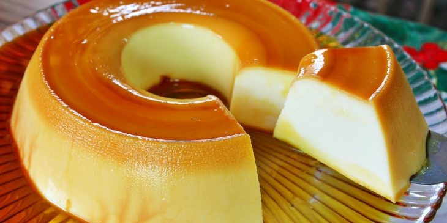

Ingredients
- ½ cup Sugar
- ¼ cup Water
- 4 Whole Eggs
- ½ cup Sugar or ¼ Sugar and 2 ounces White Chocolate
- 12 ounces Whole Milk
- 12 ounces Heavy Whipping Cream
- 1 pinch Salt
The Caramel:
The Custard:
Description
This Crème Caramel recipe is a classic French dessert, known for its rich, smooth, and velvety texture. In the United States, it is more commonly referred to by its Spanish name Flan, which is a Spanish dessert, crème caramel uses a more delicate caramel sauce to give it that extra touch of elegance. While both desserts share a similar custard base, Crème Caramel stands out with its lighter texture and a caramel layer that’s just the right balance of sweetness and complexity.
Recipe credits:
Steps
- Preheat Oven to 275°F / 135°C
- Spray 4 ramekins (6 to 8 ounces) with a very light coating of non-stick spray
- Mix the sugar and water in a glass bowl until the sugar has dissolved. Add to a saucepan, heat the sugar and water on medium to low heat. The sugar will start to turn a light golden brown (approximately 10 to 12 minutes, be careful, because it will burn very quickly). As soon as it turns a dark golden brown Mahogany color, turn off the heat immediately and CAREFULLY add about 2 tablespoons water to stop the cooking process.
- Pour into 4 individual custard cups. Tilt the cups to coat bottom thinly and evenly. Cool in the refrigerator 30 minutes or 15 minutes in freezer until caramel is hard.
- In a sauce pan, heat the cream and milk to a boiling point (BUT NOT ROLLING BOIL) Add the sugar and mix to melt.
- In a large glass bowl, mix the eggs salt and vanilla with a fork, do not use a Wisk it will create air bubbles. Add the hot milk and cream in a thin, steady stream and pour into each caramelized mold.
- Set custard cups in a hot water bath, up to 3/4" from the top rim of the cups. Bake for 1hour. Take them out of the oven and when cold enough to handle remove them from the hot water and let them get to room temp for at least 3 to 4 hours. When room temperature, refrigerate at least 6 hours (much better 24 hours).
- To un-mold, using a small knife or your finger to gently slide the edge of each custard cup to loosen. Place an inverted plate over each cup, turn the cup and plate upright and carefully lift the cup to see if the custard mold has loosened.
- Enjoy!